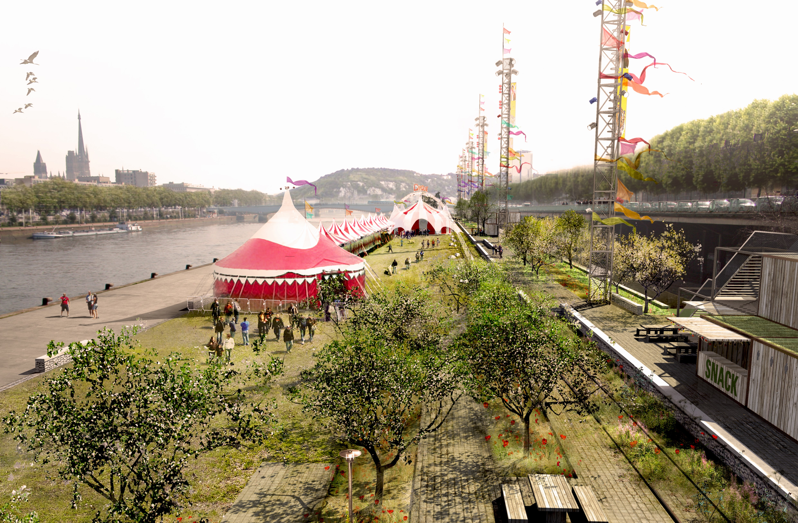

Survolez l'image et agrandissez/réduisez la vue à l'aide de la molette.
Budget: 10 658 025 € HT
Surface: Quais rive gauche : 60 500 m2 (surface étudiée : 76 700 m2) Presqu’île de Waddington : 120 500 m2 (surface étudiée : 131 000 m2)
Date début: 2011
Date fin: -
Maîtrise d'ouvrage: Ville de Rouen
Co-traitant(s): Bureau des paysages
Description:
Longtemps, à Rouen, la Seine a été une limite, les deux rives se tournant le dos. Le projet d’aménagement des quais
poursuit et amplifie la réconciliation de la ville avec son fleuve. Il s’étend sur deux sites : les quais bas de la rive gauche
et la presqu’île de Waddington plus à l’ouest, sur la rive droite. Pour s’insérer harmonieusement dans la vallée fluviale
rouennaise, nous dessinons des lignes parallèles qui épousent la courbe du fleuve comme un écho à sa géométrie,
en prenant appui sur les lignes fondatrices de la ville. Cette partition linéaire et géométrique, semblable à une portée
de musique rythmée par la succession des ponts, constitue un relais entre les aménagements existants et ceux à venir.
Dans un jeu de construction, des modules et des cabines s’adaptent à une programmation complémentaire entre
activités temporaires et activités pérennes susceptibles de faire vivre les quais tout au long de l’année.
Inspirées par l’observation des scènes végétales d’amont en aval et les caractéristiques de lieux, des séquences
composent un récit : séquence des vergers, auberge du pressoir, etc. Une nouvelle esthétique pour les espaces
publics est adoptée, plus libre, en privilégiant une gestion plus douce et économe de l’environnement : des lieux
bien abrités et orientés, le recueil des eaux de pluie pour l’arrosage des plantations, le réemploi des structures
et matériaux en place, la conservation et l’amendement des sols. Les matières naturelles jouent avec les couleurs
chaudes des aciers oxidés, des prairies humides et sèches… La nuit les quais s’illuminent avec de grands mats
de trente cinq mètres et des petits candélabres. Comme les espaces publics de la ville contemporaine,
les quais changent au fil des heures, des jours et des saisons.
{kind=link}
{kind=link}
{kind=link}
{kind=link}